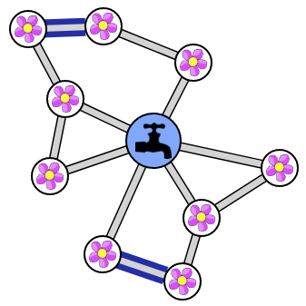
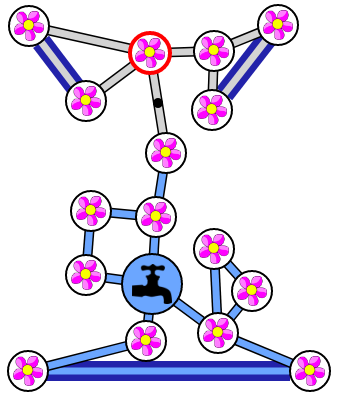
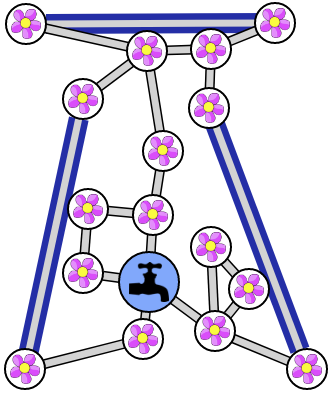
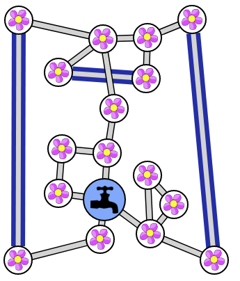
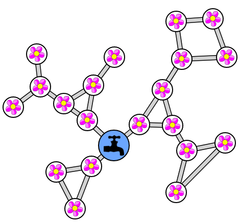
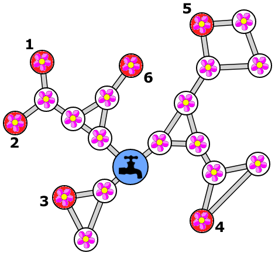
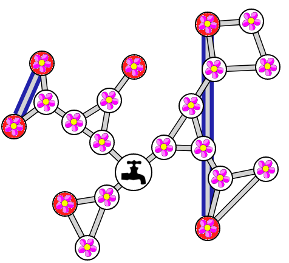
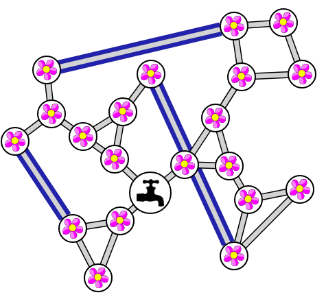

الحل
من الضروري توصيل الزهور المعزولة معًا ، أي تلك المرتبطة بواسطة أنبوب واحد. هناك 4 زهور معزولة ، لذلك 2 أنابيب كافية. على سبيل المثال:

من الضروري توصيل الزهور المعزولة معًا ، أي تلك المرتبطة بواسطة أنبوب واحد. هناك 6 أزهار معزولة ، وبالتالي فإن 3 أنابيب كافية. ومع ذلك ، فإن بعض تكوينات الأنابيب لا تحمي الأزهار من الأنابيب التي تصبح معطلة. على سبيل المثال ، هذا التكوين غير مناسب:

ومع ذلك ، هناك العديد من التكوينات المناسبة. إليك اثنان:


الخطوة الأولى هي تحريك الأزهار لتجنب جميع تقاطعات الأنابيب. هذا يتيح لك رؤية أكثر وضوحا. على سبيل المثال ، يمكننا الحصول على هذا الشكل:

الخطوة الثانية هي تحديد الزهور "الحرجة". أولاً ، الزهرة تكون حرجة إذا كانت متصلة بواسطة أنبوب واحد. بالإضافة إلى ذلك ، يوجد أيضًا مجموعات "حرجة" من الزهور ، عندما تكون مجموعة من الزهور متصله بالباقي بواسطة أنبوب واحد. يجب أن نربط كل مجموعة "حرجة" بانبوب جديد. لهذا ، سوف نختار ، بشكل عشوائي ، زهرة في كل مجموعة مهمة. في المجموع ، لدينا 6 أزهار "حرجة" ، ملونة باللون الأحمر أدناه.

بالطبع ، بوجود 3 أنابيب ، سيكون من الممكن ربط 6 أزهار حرجة معًا. لكن احذار ، من المهم عدم وضع أحد الأنبوبين الموضحين أدناه ، وإلا ستظل هناك مجموعات منعزلة يمكن حرمانها من الماء في حالة سد الأنبوب.

إذا تجنبنا وضع هذين الأنبوبين هناك ، فستوفر جميع التكوينات الأخرى حلاً صالحًا. هنا واحد:

المعلوماتية
يعرض هذا الموضوع بنية الجراف ، يُستخدم على نطاق واسع في علوم الكمبيوتر ، حيث ترتبط الكائنات ، الممثلة بـ العقد ببعضها البعض ، والروابط التي تمثلها الخطوط الواصلة بين هذه العقد. هنا الزهور والحنفية هي العقد ، والأنابيب هي الخطوط الواصله في الجراف.
يوضح السؤال المطروح في هذا الموضوع فكرة جسر أو isthmus ، وهو مفهوم مهم في نظرية الجراف . الجسر هو خط واصل بحيث إذا تم حذفه ، فإن الرسم البياني الذي هو جزء منه يتم تقسيمه إلى قسمين ، يسمى المكونات . إن إضافة الحواف حتى لا يحتوي الرسم البياني على أي جسور هو ما نسميه استدعاء الرسم البياني متصل بـ 2 خطوط واصلة .